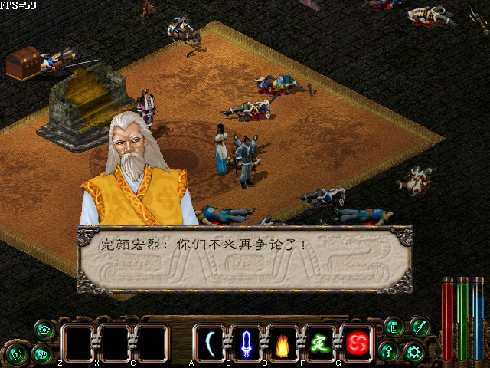
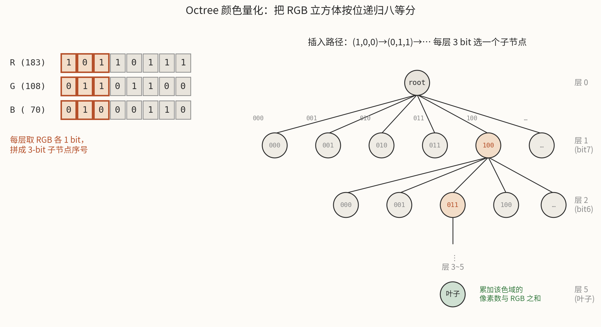
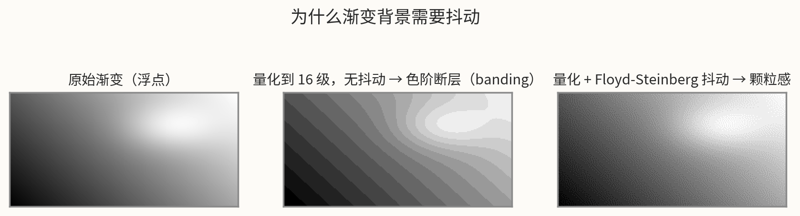
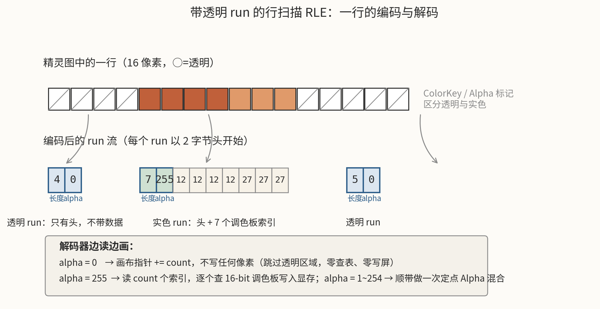
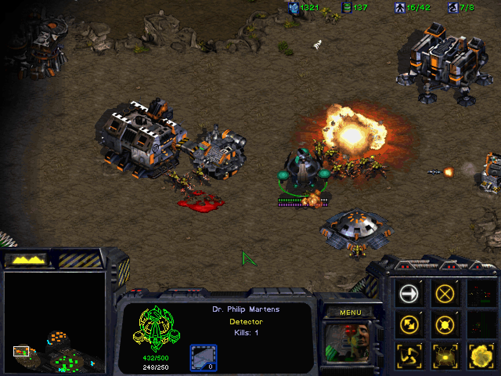
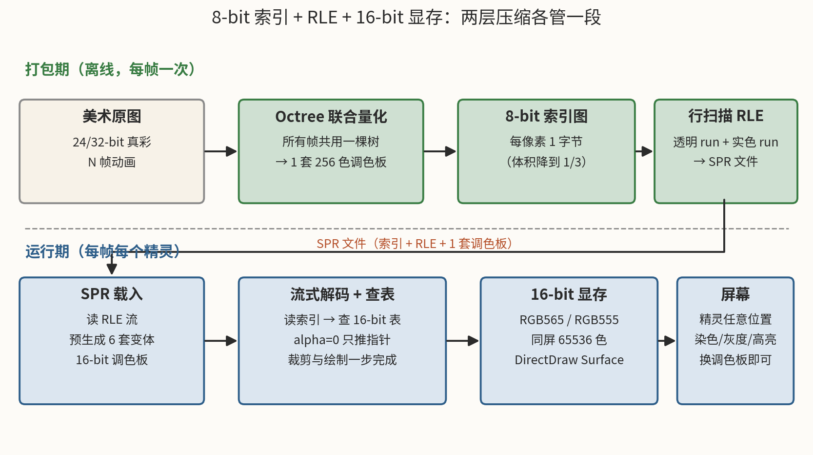

千禧年前后的 PC 2D Blitter 引擎：颜色压缩与 RLE 是怎么被硬件逼出来的
2026年09月05日 星期六最近重读了一套 2000 年代初的国产 2D 端游引擎源码（Blitter 架构，DirectDraw 绘制），里面有两个模块让我感慨良久：一套 Octree 颜色量化器，和一套带 Alpha 标记的 RLE 精灵编码。它们都不是什么高深算法，教科书上都找得到，但为什么偏偏是这两个算法、以这种方式组合在一起，只有把时钟拨回到那个年代才能想明白。
这篇文章就从硬件限制讲起，把这两件事的来龙去脉捋一遍。文中的代码全部是我重写的示意性伪代码，重在表达结构。
〇、先分岔：游戏机与 PC 的两条 2D 绘图路线
在展开之前，值得先把"游戏机"和"PC"做 2D 绘图的根本分歧交代清楚——本文讲的这套引擎，走的是后一条路。
游戏机（红白机、超任、MD 这一代）的图形芯片（PPU / VDP）根本没有帧缓冲。它的工作方式是扫描线合成器（scanline compositor）：芯片与 CRT 电子束实时同步，每根扫描线扫出来的瞬间，硬件现场把背景 Tile、精灵、窗口层按优先级合成、上色、输出——画面从不落地成一整帧位图，全程"边扫边画"。这个架构对精灵极其友好：精灵本质上是"属于某一根扫描线的一维对象"，硬件每线只做一次 OAM 检索和叠加，零内存拷贝；但代价也很硬——每线精灵数、同屏精灵数、精灵尺寸全是焊死在芯片里的上限，透明、缩放、旋转这些自由度一概没有。游戏机是用灵活性换确定性：刷新率绝对稳，画面结构被硬件规格框死（PPU 这边更细的拆解，我之前写过一篇早期图像视频芯片的盘点和一篇自制复古主机的图形路线选型，此处不展开）。
PC 走的是另一条路。IBM PC 从来没给过像样的 2D 加速硬件，VGA 给你的只是一块可写的线性帧缓冲——从 Mode 13h 的 64KB 到 DirectDraw 时代的显存 Surface，本质都是"一块你来画、画完我上屏"的内存。没有人帮你合成扫描线，遮挡、裁剪、透明、混合全得软件自己算：把精灵当成一个个小矩形，逐块搬进帧缓冲——这就是 Blitter（block transfer）架构。"Blitter"这个词源自 Amiga 的 Blitter 芯片和 Atari ST 的 BLiTTER，那两台机器把块搬运做成了硬件；PC 上它更多指的是一整套软件块搬运引擎——本文的主角之一，就是这种引擎里的精灵绘制器。帧缓冲路线的取舍正好反过来：PC 是用确定性换灵活性——没有每线精灵上限，精灵想多大就多大、想怎么变换就怎么变换，代价是每一像素的成本都要 CPU 自己扛。
本文要聊的，正是 PC 这条路线在 2000 年前后的完整答案：当所有像素都要过 CPU 的手时，颜色压缩和 RLE 为什么是省不掉的两板斧。
一、引子：我的游戏编程是从 640KB 开始的
我入门游戏编程是在 DOS 下。现在的年轻人很难想象当时的内存格局：x86 实模式下，CPU 用"段地址 × 16 + 偏移"寻址，一个段最大 64KB，整个地址空间只有 1MB，而这 1MB 里还要刨掉 BIOS、显存映射和各种上位内存块，留给程序的常规内存（Conventional Memory）只有 640KB——这就是那句著名的"640K 对任何人都应该足够了"的出处（不管盖茨说没说过）。
做游戏第一件事就是跟这 640KB 搏斗。素材稍微多一点就装不下，于是有了两套续命方案：
- XMS / EMS：扩展内存规范。加载
HIMEM.SYS和EMM386.EXE后，可以把 1MB 以外的内存以"页帧映射"的方式换进换出。读取要付切换开销，但好歹能用上机器里剩下的十几 MB； - DOS 扩展器（DOS Extender）：更彻底的方案。程序启动后切到 32 位保护模式，直接平坦寻址全部物理内存。当年几乎是行业标配——《Doom》用的就是 DOS/4GW，启动画面里那行小小的 "DOS/4GW Protected Mode Run-time" 是一代人的共同记忆。
显存这边同样紧巴巴。图形编程的入门仪式是切 Mode 13h：
// 切到 320x200、256 色的 VGA Mode 13h
void set_mode_13h() {
__asm {
mov ax, 0x13
int 0x10
}
}
// 然后直接往 0xA0000 写字节，一个字节就是一个像素
unsigned char far *vram = (unsigned char far *)0xA0000000L;
vram[y * 320 + x] = color_index; // 写的就是"调色板索引"
Mode 13h 的美在于简单：64KB 线性显存，一字节一像素，写完立刻上屏。它的"诅咒"也在于此：一屏只有 256 种颜色。所有颜色都来自一块 256 项的硬件调色板（VGA DAC，每项 RGB 各 6 bit），你写的每个字节只是这块表的索引。想换颜色？向端口 0x3C8/0x3C9 写表项；想做淡入淡出？整表渐变——那时候满屏的"呼吸感"特效，其实一个像素都没画，全是在玩弄色板。
后来 Windows 95/98 普及，DirectDraw 接管了这一切，显示模式也推进到 640×480 / 800×600 的 16-bit 高彩。DOS 时代练就的两门手艺——调色板思维和对每一个字节的偏执——被原封不动地带进了新引擎，恰好构成了本文两大主角的思想基础。
那个年代国内自研 2D 引擎的氛围也值得一提。云风（吴云洋）从 1999 年起在大学期间开发并开源了 2D 引擎"风魂"，被多家公司和小组拿去用——网易《大话西游》的底层就建立在风魂之上，云风本人也因此被请进网易（2001 年），后来才有了《大话西游 2》和《梦幻西游》的辉煌（见云风的访谈报道）。有意思的是，风魂这一系的资源格式恰好把本文的两大主角都用上了：《大话西游 2》《梦幻西游》的 WAS 动画格式就是"256 色调色板 + RLE 行程压缩"，调色板 256 项、每项一个 16-bit 565 颜色（见 WAS 文件格式分析和 Was Tools 使用手册）——和本文第六节要讲的"8-bit 索引 + 16-bit 目标"方案如出一辙。
把时间再往前拨到 DOS 时代，大宇《仙剑奇侠传》（1995）的资源包也是同一套路：物品图（BALL.MKF）和人物头像（RGM.MKF）都是"调色板编号 + RLE 压缩"，战斗动画则再用一层自家的 YJ_1 压缩（格式细节见仙剑资料站，开源重实现 SDLPAL 里能读到完整的解码代码）。海外同样如此：Westwood 的《命令与征服》系列（1995 起）用的 SHP 精灵格式，文件里只存 8-bit 调色板索引，颜色全在外部 .PAL 文件里，像素流按扫描线做 RLE（格式细节见 ModdingWiki 的 SHP 格式文档）——连"图与表分离"的做法都和后文《星际争霸》的 GRP 殊途同归。可见这套组合拳不是哪个团队的独门秘方，而是那一代 2D 引擎面对同样硬件约束收敛出的共同答案。本文要聊的这套引擎，也正是从那个圈子里生长出来的产物。
二、先算一笔账：为什么非压缩不可
2000 年 6 月，金山西山居的《剑侠情缘贰》上市——斜 45° 视角、即时战斗的 ARPG。官方宣传里最有技术含量的一句话是："实时绘图引擎可同时处理 1000 幅以上的游戏贴图，玩家不需要 3D 加速卡就能体验百人大混战"。这句广告词的背面，就是那一代 2D 引擎要面对的全部硬件约束：

- 内存：主流 32~64MB，操作系统和游戏逻辑先吃掉一截；
- 显存：2~8MB 是常态，AGP 4× 刚普及，主存到显存的带宽宝贵；
- CPU：奔腾 II / 赛扬 300~500MHz，没有 SIMD 可用的时候就靠 x86 通用指令；
- 存储：光盘 650MB 看似宽裕，但玩家硬盘空间小，下载更是奢望。
再看素材这一侧。《剑侠情缘贰》这种游戏里，主角、敌人、武功光影全是逐帧制作的 2D 精灵：一个 64×64 的角色帧，如果存 32-bit 真彩，是 16KB；一个角色有 8 方向 × 十余个动作 × 每动作近十帧，轻松上千帧，就是十几 MB——一个角色。同屏几十个单位、几百种怪物、加上地图贴图、UI、特效，真彩直存完全不可行。
所以压缩是必须的。关键在于：压缩发生在哪个维度上？ 2D 精灵的数据冗余恰好有两个相互正交的维度：
- 颜色维度：一个像素用 24/32 bit 存颜色太奢侈了。精灵图是手绘色块风格，一帧实际用到的颜色往往远少于 256 种；
- 空间维度：精灵图大量像素是透明背景，实色部分也常有成片的同色区域。
针对这两个维度，那一代引擎的标准答案是：颜色维度用量化（Quantization）压到 8-bit 调色板索引，空间维度用 RLE（Run-Length Encoding）压掉重复。一个管"每个像素多大"，一个管"有多少像素值得存"。下面我们分别拆开看。
三、颜色压缩：把真彩塞进 256 色调色板
3.1 调色板不是限制，是资产
今天的人容易把"256 色"理解成一种画质妥协，但在调色板原生时代，它首先是一种性能资产：每像素 1 字节，内存、磁盘、总线带宽全部打骨折；而且"改表不改图"的特效传统（淡入淡出、昼夜、中毒变绿）全是调色板给的。
所以问题从来不是"要不要调色板"，而是：美术交上来的是 24/32-bit 真彩图，怎么选出让画面损失最小的那 256 个颜色？ 这就是颜色量化（Color Quantization）问题。
3.2 Octree：把 RGB 立方体按位切八瓣
2000 年前后，离线工具链里最常用的量化算法是 Octree（八叉树）量化（Gervautz & Purgathofer, 1988）。思路漂亮得像变魔术：RGB 三个通道各取 1 bit，拼成一个 3-bit 序号（0~7），作为八叉树某一层的子节点编号；逐位（从最高位到最低位）往下走，走 5~8 层，每片叶子就代表 RGB 立方体里的一个小色块。

插入时只在叶子上累加"落进来的像素数"和"RGB 分量之和"。插完全部像素后，如果叶子超过 256 片，就反复把权重最小的叶子合并回父节点（父节点继承它的像素数和颜色累加值，变成新叶子），直到只剩 256 片。每片叶子的"分量累加和 ÷ 像素数"就是调色板里的一项，叶子的编号就是索引。示意伪代码：
struct OctreeNode {
uint64_t pixelCount = 0; // 落入该色域的像素数
uint64_t sumR = 0, sumG = 0, sumB = 0; // 分量累加和（取均值用）
int paletteIndex = -1; // 量化完成后分配的调色板索引
OctreeNode* child[8] = {}; // 8 个子节点
};
void Insert(OctreeNode* node, RGB c, int layer) {
if (layer == MAX_LAYER) { // 到达叶子：统计即可
node->pixelCount++;
node->sumR += c.r; node->sumG += c.g; node->sumB += c.b;
return;
}
int bit = 7 - layer; // 本层取第几个 bit
int slot = ((c.r >> bit) & 1) << 2
| ((c.g >> bit) & 1) << 1
| ((c.b >> bit) & 1);
if (!node->child[slot]) node->child[slot] = new OctreeNode;
Insert(node->child[slot], c, layer + 1);
}
// 量化：不断合并"最不重要"的叶子，直到只剩 K 片
void Reduce(Octree* tree, int K) {
while (tree->leafCount > K) {
OctreeNode* victim = LeastSignificantLeaf(tree); // 像素少、层级浅者优先
OctreeNode* parent = victim->parent;
parent->pixelCount += victim->pixelCount; // 统计量上卷
parent->sumR += victim->sumR; /* G、B 同理 */
delete victim; // 父节点变成叶子
}
}
"权重 = 像素数 + 层级惩罚"这个小公式是经典 Octree 的精髓：出现次数少的颜色、以及位于浅层（即和其他颜色差异大但没人气）的叶子先被牺牲。直观地说，就是"没人用的颜色让给有人用的颜色"。
选 Octree 而不是 Median Cut、k-means 之类，是那个年代非常合理的工程决定：插入是 O(N)、每像素只要几次位运算，内存只占有效路径，几百行 C++ 就能写完——打包几千张精灵图时，快慢之分就是分钟级和小时级的区别。
3.3 这是有损压缩，损失在哪
必须明确：Octree 量化是有损的。24-bit 颜色空间有 1677 万种颜色，压到 256 项调色板，本质是多对一映射，原始 RGB 永远找不回来了。而且它丢的东西和 RLE 完全是两个维度：
| 手段 | 丢什么 | 性质 |
|---|---|---|
| Octree / Median Cut / Wu | 颜色精度 | 有损，颜色空间降维 |
| JPEG | 空间高频细节 | 有损，频域量化 |
| RLE / LZW | 什么都不丢 | 无损，空间冗余 |
| 抖动（Dithering） | 几乎不丢 | 用噪声换精度 |
正因为正交，两层可以串联：先量化成索引图，再对索引图做 RLE，互不干扰。
量化的损失在两类画面上会现形。一类是大色块渐变——天空、水面、雾气：256 个颜色摊到平滑渐变上，相邻色阶之间会出现肉眼可见的断层（banding）。解药是抖动，最经典的是 Floyd-Steinberg 误差扩散：量化一个像素后，把误差按 7/16、3/16、5/16、1/16 扩散到右、左下、下、右下四个未处理邻居，色阶断层就化成了细腻的颗粒感。

但注意一个反直觉的结论：抖动对精灵图是负优化。精灵图靠硬边色块造型，一抖边缘就糊。所以当年的工作流里，抖动只该施加在渐变背景上，精灵图保持硬边——这个"按图层区别对待"的原则，到今天做像素风游戏依然成立。
另一类受害画面是颜色分布极端的图（比如纯黑背景上几个高光点），Octree 容易把高光合并掉，这种场景 Median Cut 或 Wu 的方差切分更稳。这是选型时该知道的边界。
3.4 一套调色板，六张面孔
调色板还有一个 DOS 时代就验证过的红利：换表不换图。那套引擎把这个红利做到了极致——每个精灵载入时，一次性预生成 6 套调色板变体：
| 变体 | 用途 | 典型场景 |
|---|---|---|
| 原色 | 正常绘制 | 默认 |
| 高亮 | 整体提亮 | 被治疗、选中闪光 |
| 灰度 | 去色 | 冰冻、石化、死亡 |
| 红染 | 偏红 | 被火球击中、狂暴 |
| 绿染 | 偏绿 | 中毒 |
| 蓝染 | 偏蓝 | 冰冻、法力相关 |
运行期角色中了冰冻，不用改一个像素，绘制时把调色板指针偏移到"灰度套"即可——染色特效的边际成本是一次指针加法。这在每帧要画几百个精灵的软件渲染时代，是极其划算的以空间换时间：6 套 × 256 项 × 2 字节，每个精灵不过 3KB。
这里还有一个容易踩的工程坑：一套调色板必须被一个动画的所有帧共享。如果每帧各自量化，"肤色"在第 1 帧是索引 7、第 2 帧变成索引 23，正常播放时两色接近看不出来，可一旦切到灰度或高亮变体，两个索引在变体表里的差值会被放大，角色就会在身上"闪"一下。所以打包工具必须把所有帧喂给同一棵 Octree 做联合量化，保证同一原始色在每一帧都映射到同一索引。这个约束没有任何运行期兜底，全靠工具链自觉——这是那一代引擎里典型的"约定大于校验"。
四、RLE：一种"边解压边画"的压缩
4.1 为什么不是 LZW
既然要压缩，为什么不用更"正经"的 LZW（GIF 用的那种）？因为解压形态不对。
LZW 解压需要维护一个不断生长的字典，输出是"先解压成完整位图、再整体绘制"。而 2D Blitter 引擎的核心诉求是流式绘制：屏幕上几百个精灵，每个都可能被屏幕边缘裁掉一半、被建筑遮住一角，你绝对不想"先把整张图解压到临时位图再裁剪 blit"——那等于白付一遍内存带宽。
RLE 恰好相反：数据是按扫描线顺序排列的 run 流，解码器只要维持"当前写到画布哪一行、哪个 x"这一点点状态，就能一边读压缩流、一边把像素写进显存，遇到裁剪区域直接快进。解码和绘制是同一次遍历，零中间缓冲。无字典、状态极小、可以单遍流式——这就是 2D 精灵场景选 RLE 的全部理由。
4.2 把透明像素编码成一种 run
精灵图最大的空间冗余是透明背景。那套引擎的处理很妙：不给精灵单独的 mask 通道，而是把透明度做成 run 头里的一个字节：
每个 run = [长度 count][alpha][可选的 count 个调色板索引]
alpha = 0 → 透明 run：没有数据字节，共 2 字节
alpha = 255 → 实色 run：头 + count 个索引字节
alpha = 1~254 → 半透明 run：整段共享一个透明度

编码端是朴素的逐行扫描：
// 把一行 8-bit 索引图编码成 run 流；transparent 由 ColorKey 或 alpha 通道判定
void EncodeLine(const uint8_t* pixels, int width, ByteStream& out) {
int x = 0;
while (x < width) {
int transparent = CountRun(pixels + x, width - x, IsTransparent);
int opaque = CountRun(pixels + x, width - x, IsOpaque);
if (transparent > 0) {
out.Write(min(transparent, 255)); // 长度（单字节，上限 255）
out.Write(0); // alpha = 0：透明
x += transparent;
} else {
out.Write(min(opaque, 255));
out.Write(255); // alpha = 255：实色
for (int i = 0; i < min(opaque, 255); i++)
out.Write(pixels[x++]); // 照搬 count 个调色板索引
}
}
}
有两个细节值得一提。其一，单 run 长度上限 255（一个字节），超长就拆成多个 run——对几十像素宽的精灵毫无影响，这是"用单字节换解码器简单"的权衡。其二，编码前会先找出帧内非透明像素的最小包围盒，只编码这一块，并在帧头记下相对原图的偏移——不规则轮廓的精灵因此不必占用矩形画布，又省一笔。
经验上，这套格式对精灵图能拿到 2:1 到 6:1 的压缩比，透明像素占比越高越赚。
4.3 解码即绘制
真正的功夫在解码端。它不是一个"解压函数"，而是一个把走流、裁剪、查表、混合四件事揉在一起的绘制器：
// 流式绘制：src 指向 RLE 流，dst 指向 16-bit 显存当前行位置
void DrawRLE(const uint8_t* src, uint16_t* dst, int visibleWidth,
const uint16_t* palette16, int clipLeft, int clipRight) {
int x = 0;
while (x < visibleWidth) {
int count = *src++;
int alpha = *src++;
if (alpha == 0) {
dst += count; // 透明：只推画布指针，零读写
} else {
// 裁剪：本 run 与 [clipLeft, clipRight] 求交，只画交集
for (int i = 0; i < count; i++, src++) {
int px = x + i;
if (px >= clipLeft && px < clipRight) {
if (alpha == 255)
*dst = palette16[*src]; // 查表，直写
else
*dst = Blend(*dst, palette16[*src], alpha); // 定点混合
}
dst++;
}
}
x += count;
}
}
注意透明 run 分支的杀伤力：两个自增就跳过了一段像素——不读数据、不查表、不写显存。2D 游戏里满屏精灵互相遮挡，实际可见像素远少于总像素，这个"跳过成本趋近于零"的特性就是帧率本身。当年这类绘制器通常整体用 x86 汇编（后来是 MMX）手写，把四种裁剪象限（左裁/右裁的组合）展开成四条专门路径，寄存器分配抠到个位数周期。Alpha 混合也是定点数：dst = (src * a + dst * (32 - a)) / 32，两条 mul 搞定，不碰浮点。
五、对照样本：《星际争霸 1》
这套"8-bit 调色板 + RLE 精灵"的方案不是某个引擎的奇技淫巧，而是那个时代的行业共识。最有力的证据来自暴雪——《星际争霸 1》（1998）就是 640×480、8-bit 调色板渲染的游戏，它的精灵格式 GRP（沿用到《魔兽争霸 2》，格式甚至可追溯到初代《魔兽争霸》）几乎是我们上面所有讨论的活化石，社区逆向资料（如 IronGRP 的文档）讲得很清楚：
- GRP 只存调色板索引：每像素一个字节，真正的 RGB 在外部的
.pal调色板文件里（256 项 × 3 字节），图与表分离，和我们说的"索引图 + 调色板"一模一样； - 调色板索引 0 就是透明：ColorKey 方案，不需要独立 mask；
- RLE 压缩直接编码在像素流里：控制字节区分三种指令——"接下来 x 个像素透明"、"接下来 x 个像素同色（只存一次索引）"、"原样拷贝接下来 x 个像素"。绝大多数单位和建筑精灵都是 RLE 压缩存储的；
- 调色板换色玩到极致：玩家颜色不靠重画素材，而是用
tselect.pcx这类重映射表——精灵上特定索引区间的像素，按玩家编号映射到另一组索引，一个枪兵模型瞬间变成 8 个玩家的 8 种颜色；火焰、爆炸等半透明效果则用ofire.pcx之类的二维查找表实现：精灵索引 × 背景索引 → 新索引，纯查表做出伪 Alpha 混合。

把这套东西放在 1998 年的奔腾 II 上看，每一个决定都直指硬件咽喉：8-bit 索引让单位精灵的内存占用减半；RLE 让透明轮廓近乎免费；调色板重映射让"8 玩家 × 数百单位"的换色零成本；查表式半透明让爆炸特效不用做任何乘法。不是暴雪选择了这些技术，是硬件选择了它们。
六、一个常见误会：同屏 256 色？
聊调色板索引图时，最常听到的疑问是："每张图 256 色，同屏几十张图，不就超过 256 色了吗？"
这个疑问混淆了存储格式和显示格式。2000 年前后的 PC 2D 引擎，显示端早就切到了 16-bit 高彩（RGB565 / RGB555，同屏上限 65,536 / 32,768 色）。8-bit 索引只存在于磁盘和内存里，绘制的瞬间就被"翻译"掉了：
RLE 流里读出一个字节（调色板索引）
│
▼
在 16-bit 调色板里查表：color16 = palette16[index]
│
▼
写进 16-bit DirectDraw Surface（RGB565/555）
每个像素在显存里是实打实的 2 字节颜色，跟"全屏共享 256 色"毫无关系——那是 DOS Mode 13h 时代的枷锁，DirectDraw 时代早已打破。

那为什么还要坚持用 8-bit 索引做中间格式？三个理由，全是钱：
- 内存和带宽减半：每像素 1 字节 vs 2 字节，素材缓存直接翻倍，主存到显存的拷贝量减半；
- RLE 跳过更便宜：跳过一个 8-bit run 只推 1 字节步长，透明 run 更是只读 2 字节头；
- 变体调色板小：6 套 × 256 项 × 2 字节 = 3KB/精灵，染色特效随便用。
这就是"磁盘/内存用索引、显存用真彩、中间靠查表衔接"的三层结构，Win98 之后 DirectDraw 普及年代的标准 2D 引擎范式。Octree 量化的一切色彩损失都发生在离线打包期，运行期只是查表，一分精度都不再丢。
七、后记：这些技术死了吗
GPU 时代到来后，软件 Blitter、调色板、手写汇编绘制器都进了博物馆——今天纹理压缩换成了 BC/ETC/ASTC（同样是"有损、块级、为随机访问优化"的思路），透明混合交给了硬件 Blend Unit，没人再为一个像素的绘制周期写汇编。
但有几样东西其实没死。RLE 的"run 流 + 流式消费"思想活在各种列式存储和稀疏数据结构里；颜色量化活在每一个 PNG 优化工具（pngquant 至今还是 Median Cut + Floyd-Steinberg 的组合拳）里；"预计算变体、运行期换表"的以空间换时间，和今天的 LUT 调色、Shader 查表一脉相承；而"按内容类型区别对待"——精灵硬边不抖动、背景渐变要抖动——更是任何压缩管线都绕不开的常识。
回看那个时代，最动人的不是某个具体算法，而是那种在 64KB 段、2MB 显存、300MHz CPU 的夹缝里，把每一个字节、每一次访存都安排得明明白白的工程自觉。限制催生设计，诚不我欺。